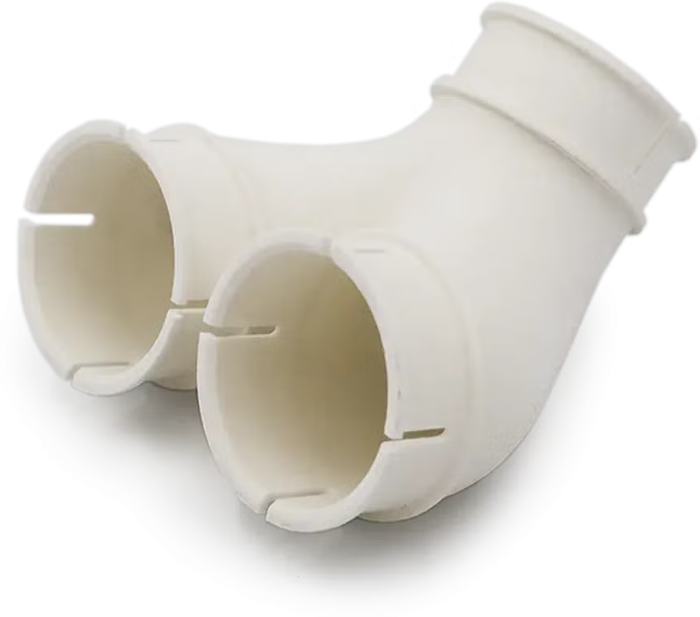

Matériau SLS · Nylon PA12 série
Production en série de pièces SLS en Nylon PA12
Le même PA12 que pour le prototype, avec un process pensé pour la répétabilité : de quelques dizaines à quelques centaines de pièces identiques, sans moule ni outillage.
SLS · Frittage laser sélectifReproductible · Industriel · Série

Fiche express
Nylon PA12 série en bref
Tenue thermiqueBonne
RigiditéMoyenne
FinitionGrise, grain fin
RépétabilitéÉlevée
OutillageAucun
Le matériau
Qu'est-ce que le Nylon PA12 série ?
Le SLS est l'une des rares technologies d'impression 3D vraiment adaptées à la petite et moyenne série. La chambre de fabrication est remplie de pièces imbriquées en 3D : un seul cycle peut produire des dizaines de pièces à la fois.
Pour une série, nous travaillons le placement des pièces, l'orientation et les paramètres d'impression afin que chaque exemplaire soit identique au précédent. C'est la même poudre PA12 que pour nos prototypes : vous validez une pièce, puis vous lancez la série sans changer de matière.
C'est une alternative sérieuse à l'injection plastique quand les quantités ne justifient pas un moule, quand la pièce évolue encore, ou quand vous avez besoin de pièces rapidement.
Pour / contre
Points forts & limites
Points forts
- Aucun moule : pas d'investissement de départ
- Répétabilité d'une pièce à l'autre
- Plusieurs références dans un même lot
- Modification du design possible entre deux séries
- Délais courts par rapport à l'outillage d'injection
Limites
- Au-delà de plusieurs milliers de pièces, l'injection devient généralement plus économique
- Finition grise et légèrement granuleuse sans post-traitement
- Pièces limitées au volume de la chambre
Usages
Applications du Nylon PA12 série
Secteur
Séries industrielles
Pièces de machines, fixations, clips, entretoises produites par dizaines ou centaines.
Secteur
Produits finis
Accessoires, boîtiers, pièces de produits vendus en petites quantités.
Secteur
Pièces détachées
Production à la demande de pièces qui ne sont plus fabriquées, sans stock.
Secteur
Pré-séries
Pièces fonctionnelles pour tests terrain avant un éventuel passage à l'injection.
Caractéristiques
Données techniques
| Famille | Polyamide 12 |
|---|---|
| Résistance à la traction | ≈ 45–50 MPa |
| Allongement à la rupture | ≈ 15–20 % |
| Plage d'utilisation | ≈ -40 °C à +90 °C |
| Volume de fabrication | jusqu'à 350 × 350 × 430 mm |
Valeurs indicatives (données fabricant ou ordres de grandeur de la famille de matériau). * À valider selon l'application finale. Fiches techniques complètes sur demande.
Conseils d'atelier
Bien concevoir sa pièce en Nylon PA12 série
Conseils de conception
- Envoyer toutes vos références en même temps : nous optimisons le remplissage de la chambre.
- Prévoir des repères ou une numérotation directement dans le modèle si nécessaire.
- Adapter la pièce au SLS (épaisseurs, jeux, évents) plutôt que reprendre tel quel un design pensé pour l'injection.
Finitions & post-traitements
- Microbillage
- Teinture noire ou couleur
- Tribofinition en lot
- Marquage ou gravure laser
- Inserts et assemblage
Machines compatibles
Imprimé sur


Comparer
Nylon PA12 série ou autre chose ?
FAQ
Questions fréquentes sur le Nylon PA12 série
Combien de pièces peut-on produire en un cycle ?
Cela dépend de la taille des pièces : de quelques grandes pièces à plusieurs centaines de petites pièces imbriquées dans la chambre.
Le SLS peut-il remplacer l'injection plastique ?
Pour des séries de quelques dizaines à quelques centaines de pièces, souvent oui : pas de moule, pas de délai d'outillage, et le design peut encore évoluer.
Peut-on mélanger plusieurs références dans une même série ?
Oui, c'est même recommandé : un lot bien rempli réduit le coût par pièce.
Les pièces d'une série sont-elles identiques ?
Nous travaillons le placement et les paramètres pour une bonne répétabilité entre pièces et entre lots.
Autres matières SLS

Nylon PA12 gris
Polyvalent · Résistant · Économique
Voir la fiche →
Rilsan PA11
Polyvalent · Résistant · Flexible
Voir la fiche →
PA11
Biobased · Souple · Biocompatible
Voir la fiche →
PA11 CF
Rigide · Léger · Structurel
Voir la fiche →
PA11 ESD
Antistatique · Protecteur · Électronique
Voir la fiche →
PA12 chargé verre
Rigide · Stable · Thermique
Voir la fiche →
PA2210 FR
Ignifuge · Certifié · Aéronautique
Voir la fiche →
PA12 alimentaire
Alimentaire · Certifié · Détectable
Voir la fiche →On nous trouve aussi pour
Production série impression 3D BelgiqueAlternative injection plastique petite sérieSérie de pièces SLS LiègeFabrication additive série PA12
Description détailléeTout savoir : cliquez pour déplier
CAS D'USAGE : POUR QUOI ?
- Petites séries industrielles
- Moyennes séries de production
- Pièces finales fonctionnelles
- Remplacement injection plastique
- Production à la demande
Machines compatibles chez O&D
Supermaker SLS 3540 PRO
Le Nylon PA12 (série) est un polyamide technique résistant, léger et durable pour pièces fonctionnelles SLS.
Le PA12 pour les séries est un matériau thermoplastique de la famille des polyamides, largement utilisé en fabrication additive via le procédé SLS (Selective Laser Sintering) . Il est particulièrement apprécié pour la production de pièces en petites et moyennes séries, car il permet de fabriquer des composants directement fonctionnels sans nécessiter d’outillage coûteux comme dans le moulage par injection.
Ce matériau offre un excellent équilibre entre résistance mécanique, rigidité et légère flexibilité, tout en conservant une bonne stabilité dimensionnelle dans le temps. Il résiste bien aux chocs, à l’usure ainsi qu’à de nombreux agents chimiques, ce qui le rend adapté à des environnements industriels exigeants. Le PA12 pour les séries est souvent utilisé pour réduire les délais de production et permettre une fabrication à la demande, tout en garantissant une qualité constante des pièces. Sa surface mate et légèrement granuleuse reste homogène sur l’ensemble des pièces produites, ce qui en fait une solution idéale pour des productions techniques et fonctionnelles.
Prochaine étape
Une pièce à fabriquer ?
Envoyez votre fichier 3D ou décrivez votre besoin : devis instantané avec fichier, devis personnalisé sous 24 h.